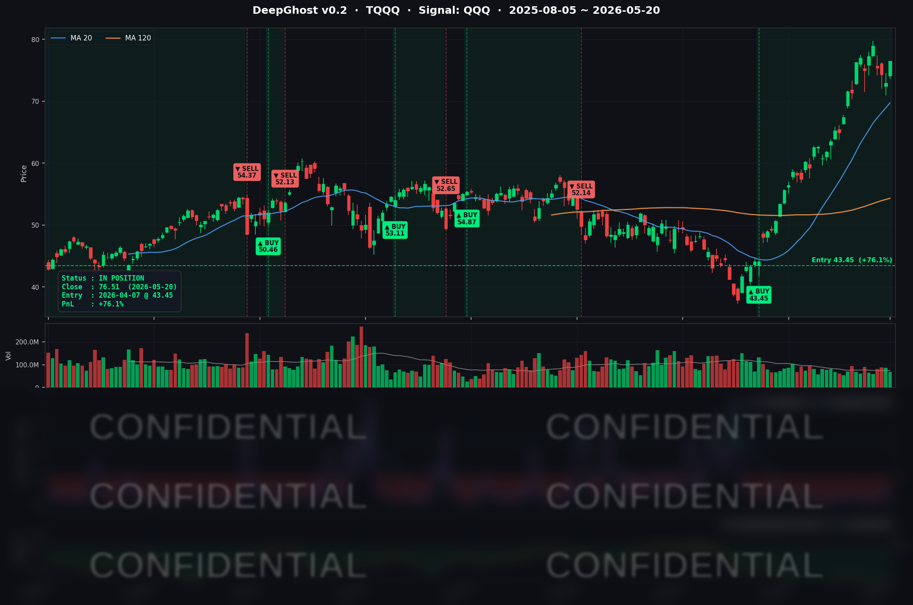

오늘은 유가가 하루에 $10이 빠지면서 금리가 안정되었습니다만,
장 마감 후 엔비디아 실적에 대한 시장의 반응은 차갑습니다.
향후 시장 추세도 혼재가 될 가능성이 높아 보입니다.
본인의 매매 Rule이 없다면 Ghost.AI 지침을 따르세요.
📊 오늘의 매매 신호
| 항목 | 내용 |
|---|---|
| 오늘 할 일 | ✅ 아무것도 안 해도 됩니다 |
| 포지션 상태 | 📈 TQQQ 보유 중 (IN POSITION) |
| 매수 진입일 | 2026-04-07 (43일째) |
| 진입가 → 현재가 | $43.45 → $76.51 |
| 현재 포지션 수익 | +76.09% |
TQQQ 시그널 — IN POSITION
현재 상태: 매수 포지션 유지 중 | 누적 수익률 +76.09%

시그널이 말하는 것
어제 30년물 국채금리가 19년 만에 최고치(5.197%)를 찍으면서 빅테크 멀티플이 디레이팅 압박을 받았습니다. 모델 신호 강도는 그날 잠깐 약해졌습니다. 그러나 청산 임계까지는 여유가 남아 있었고, Ghost.AI는 포지션을 그대로 들고 갔습니다.
오늘은 정반대 톤이었습니다. 트럼프 대통령이 美-이란 분쟁이 "최종 협상 단계"라고 발언하자 WTI가 하루에 약 $10 급락($108 → $98), 10년물 국채금리는 16개월래 고점에서 -2~5bp 후퇴했습니다. 듀레이션 부담이 풀린 빅테크가 일제히 반등했고, 나스닥은 +1.54%, 다우는 사상 처음 종가 기준 50,000을 재돌파했습니다. 그 와중에 TQQQ는 +4.91% 급등, 3배 레버리지 ETF의 비대칭 페이오프가 누적 수익에 +8.24%p로 박혔습니다.
모델 신호는 더 깊은 매수 구간으로 재가속했습니다. 어제 일시적으로 후퇴한 매수 압력이 오늘 더 강하게 회복된 모습입니다. 청산 임계까지는 여전히 여유가 큽니다. 시장이 횡보·혼조가 아니라 분명한 추세 방향성을 유지하고 있다는 평가입니다.
이번 거래는 Ghost.AI 운영 원칙의 정량적 증거입니다. 추세 포착 기능이 어제의 30년물 쇼크 같은 단발 충격을 차익실현으로 이어가지 않도록 막아주었고, 그 결과 오늘의 단일 거래일 폭발을 향유했습니다. 4월 7일 진입 후 43일 동안 단 한 번도 청산 트리거가 발생하지 않았다는 사실 자체가 알파의 원천입니다.
오늘 미국 마감 — 주요 이슈 서머리
지수 마감
| 지수 | 종가 | 등락률 |
|---|---|---|
| S&P 500 | 7,432.97 | +1.08% |
| 나스닥 종합 | 26,270.36 | +1.54% |
| 다우존스 | 50,009.35 | +1.31% |
| 러셀 2000 | — | +2.40% |
3대 지수 광범위 리스크온 동반 강세. 다우는 종가 기준 사상 처음 50,000을 재돌파했고, 소형주 지수 러셀2000이 +2.40%로 가장 강했습니다. NVDA 어닝 직전 포지셔닝 + 이란 디스컬레이션 헤드라인 + 금리 후퇴라는 3중 호재가 동시에 반영된 하루였습니다.
국채 금리 & 연준
| 국채 만기 | 수익률 | 전일 대비 |
|---|---|---|
| 2년물 | 약 4.12% | -4bp |
| 10년물 | 약 4.65% | -2 ~ -5bp |
| 30년물 | 약 5.02% | -3bp |
어제 16개월래 고점($4.70%)을 찍었던 10년물이 후퇴했습니다. 30년물도 5.197% 19년 고점에서 5.02% 부근으로 한 단계 내려왔습니다. 단기물 중심으로 금리가 빠진 불 스티프닝 일부 되돌림 형태인데, 듀레이션 부담 완화가 직접적으로 빅테크 멀티플 회복으로 연결됐습니다. 나스닥이 S&P500보다 더 크게 오른 +1.54% 아웃퍼폼이 그 결과입니다.
다만 같은 날 공개된 FOMC 4/28~4/29 회의 의사록은 매파 톤이었습니다. 4-4 동결 결정에서 8-4 반대표(1992년 10월 이후 가장 많은 dissent) + 다수 위원이 "easing bias(완화 편향)를 성명서에서 아예 제거하기를 선호" + 인플레이션 상방 리스크 시 추가 정책 긴축(some additional policy firming) 가능성을 명시. 시장은 의사록의 매파 톤보다 같은 날 나온 이란 디스컬레이션 헤드라인을 단기적으로 더 크게 가격화했습니다. 연내 인하 베팅은 사실상 0이며, 일부는 인상까지도 베팅하는 상황은 그대로 유지됩니다.
핵심 이슈
-
이란 협상 "최종 단계" 발언 → WTI 하루에 ~$10 급락 + 위험자산 일제 반등: 트럼프 대통령이 분쟁이 "very quickly" 종료될 수 있다고 발언, 미국이 협상의 "final stages"에 있다는 보도가 나왔습니다. WTI는 약 $108에서 $98 부근으로 하루 만에 ~$10 급락, Brent도 동반 후퇴. 호르무즈 해협 정상화 기대가 위험자산 전반의 호재로 작용했습니다. 에너지 섹터는 -2.08% 약세지만 나머지 모든 섹터가 강세였습니다. 단, 트럼프는 "협상 결렬 시 재타격 가능"이라는 경고를 함께 했다는 점에서 단일 변수의 양면성이 그대로 잔존합니다.
-
NVDA Q1 FY27 어닝 + 마감 후 광범위 비트: 정규장은 +1.30% ($223 부근)로 어닝 직전 포지셔닝 강화. 마감 후 발표된 실제 결과는 광범위 비트입니다 — 매출 $81.6B (+85% YoY) vs 컨센 $79B 상회, 데이터센터 $75.2B (+92% YoY) vs 컨센 $73B 상회, 비-GAAP EPS $1.87 (+140% YoY) vs 컨센 $1.77~1.78 상회, Q2 가이던스 $91.0B ±2%로 휘스퍼($90B)까지 상회, $80B 추가 자사주 + 분기배당 25배 인상($0.01 → $0.25)까지. 단, 중국 Hopper 매출 $0 (전년 $4.6B) 헤드윈드와 비용 상승 우려가 시간외에서 일부 차익실현을 자극했습니다. 5/21 정규장 갭과 반도체 섹터 spillover가 다음 거래일의 변동성 트리거입니다.
-
FOMC 4월 의사록의 매파 톤이 디스컬레이션 호재에 묻혔다: 8-4 반대표(1992년 10월 이후 최대), 다수 위원의 easing bias 제거 선호, 추가 긴축 시사. 그러나 이란 헤드라인이 같은 날 동시에 나오면서 채권/주식 모두 매파 톤을 외면했습니다. 채권은 단기물 중심으로 소폭 후퇴, 주식은 상승 마감. 다만 매파 의사록의 영향은 합의 결렬 시 재조명될 가능성이 잠재합니다.
매크로 체크
- WTI: 약 $98 (전일 ~$108 대비 ~$10 급락) — 단일 변수 최대 변동.
- VIX: 약 16~17 (전일 17~18 대비 하락). 정상 변동성 구간 복귀.
- CNN 공포탐욕 지수: 60 (Greed) — 5월 초 70+ 대비 후퇴했지만 안정적인 탐욕 구간.
- 금: 디스컬레이션 영향으로 강세 일부 되돌림 추정.
- DXY: 안전자산 선호 일부 해소로 약보합.
- 경제 지표: 5/20은 굵직한 지표 부재 — FOMC 의사록이 메인. 향후 주중 S&P Global PMI 플래시, 신규 실업수당 청구건수, NVDA 후속 헤드라인이 관전 포인트.
커버리지 종목 동향
- NVDA (~$223, +1.30%): 어닝 직전 +1.30% 마감, 나스닥 상승의 핵심 견인차. 마감 후 발표된 Q1 FY27은 매출/EPS/가이던스 전 항목 컨센 비트 + 자사주 $80B 추가 + 분기배당 25배 인상. 다만 중국 Hopper $0, 비용 상승 우려가 시간외 일부 차익실현 자극.
- TSLA (~$417, +3.25%): 임의소비재 섹터 +2.39% 견인. 유가 -$10 급락 → 소비여력 회복 기대 + 누적 30% 가까운 드로다운 회복 베팅. Q1 배달 미스(358K vs 366K 컨센), 에너지 저장 -38% QoQ 헤드윈드 잔존.
- INTC (~$118.96, +7.36%): 커버리지 일간 최대 상승. 트럼프 중재 Apple-Intel 딜 보도 지속 효과 + 파운드리·CPU 회복 시나리오 단계적 반영. 주중 레인지 $102 → $118.
- QCOM (~$202.51, +3.53%): AI/데이터센터 다각화 스토리, 별도 빅 헤드라인 없이 나스닥 동조 반등.
- AMZN (~$265.01, +2.19%): 임의소비재 강세 + 5월 초 발표한 AWS 15분기래 최고 성장 모멘텀 잔존.
- AVGO (~$417.76, +1.63%): LSEG와 5년 기술 파트너십 확대 발표. AI 가속기/네트워킹 ASIC 모멘텀. 일중 고가 $424.
- AAPL (~$302.25, +1.10%): NDX 동조 강세. 5월 초 실적에서 capex가 $13B FY25로 다른 빅테크($180~200B) 대비 현저히 낮다는 멀티플 재평가 요인이 잠재.
- MSFT (~$421.06, +0.87%): Azure +39% YoY, AI ARR $37B 펀더멘털 강세. 5월 초 capex $190B FY25 가이던스 상향. 금리 후퇴 직접 수혜.
- META (~$605.06, +0.41%): 광고 모멘텀(매출 +33%) 잔존, NDX 동조 강세.
- GOOGL (~$388.91, +0.32%): Cloud +63% YoY 펀더멘털 강세, capex 가이던스 $180~190B로 상향.
- NFLX (~$88.09, -1.39%): 커버리지 유일 하락. 별도 헤드라인 없이 단독 약세. 비-AI 익스포저로 시장 광역 리스크온 수혜에서 비껴남.
- SPY (~$741.25, +1.02%) / QQQ (~$713.15, +1.66%) / TQQQ (~$76.51, +4.91%): 인덱스 동반 강세. 3배 레버리지 TQQQ가 단일 거래일 최대 +4.91%로 점프.
시장과 시그널 — 오늘의 인사이트
흔들리지 않은 자가 살아남는다.
4월 7일 TQQQ에 진입한 뒤 오늘로 43일째입니다. 그 사이 매주 한두 번씩 "오늘은 청산해야 하는 거 아닌가" 싶은 충격이 반복됐습니다. 가장 최근만 봐도 어제(5/19) 30년물이 5.197%로 19년 만에 최고치를 찍었습니다. 그날 모델 신호 강도는 일시적으로 약해졌고, 빅테크는 광범위 디레이팅을 받았습니다. 그럼에도 불구하고 Ghost.AI는 청산 트리거를 발생시키지 않았습니다.
그 결과가 오늘입니다. WTI가 하루에 ~$10 빠지고 10년물이 후퇴하자 나스닥이 +1.54% 반등했고, TQQQ는 +4.91% 급등했습니다. 3배 레버리지의 비대칭 페이오프가 누적 수익에 그대로 박혔습니다. +67.85% → +76.09%로 +8.24%p 점프. 이 한 거래일의 점프는 어제 흔들리지 않은 자가 받는 정량적 보상이었습니다.
압축 메시지는 단순합니다 — 추세 검증을 하기 전까지 차익실현 충동을 차단하는 룰이 곧 알파의 원천입니다. 인간 본능적으로는 "이미 70%를 벌었는데 일부라도 보호해야 하지 않나"는 동기가 강해집니다. 모델은 그 본능을 무시하고 단순 룰만 지킵니다.
내일을 위한 체크리스트
- [ ] NVDA 5/21 시간외/갭 반응: 어닝 광범위 비트 + $80B 자사주에도 불구하고 중국 Hopper $0 헤드라인 확대 시 시간외 차익실현 가능. 반도체 섹터(SOX) spillover 동반 가능.
- [ ] 이란 합의 헤드라인: 실제 합의 체결 또는 결렬. 결렬 시 WTI 재상승 → 인플레이션 재가속 → 매파 의사록 톤 재조명 → 금리 재상승 시나리오.
- [ ] S&P Global PMI 플래시 + 주간 실업수당: 노동시장 균열은 의사록이 명시한 인하 트리거.
Ghost.AI — Quantitative AI Investment
Model: DeepGhost v0.2 | Transformer-Based Deep Learning
Coverage: 13 tickers | Updated every trading day after US market close
⚠️ 본 자료는 정보 제공 목적으로만 작성되었으며 투자 권유가 아닙니다. 모든 투자의 책임은 투자자 본인에게 있습니다. 과거 성과가 미래 수익을 보장하지 않습니다.